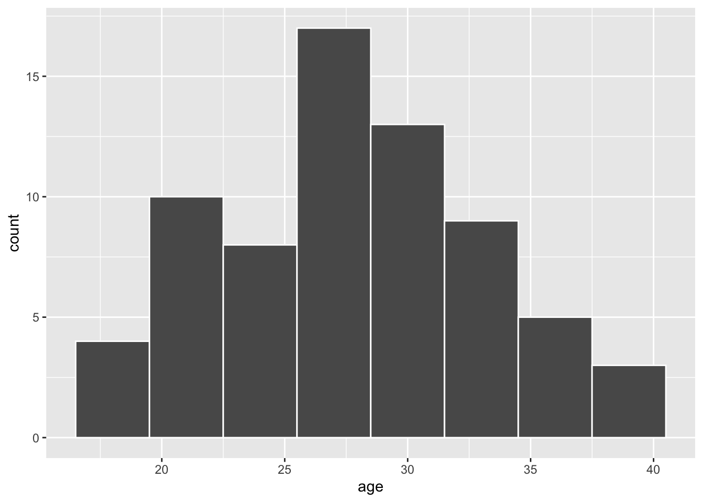
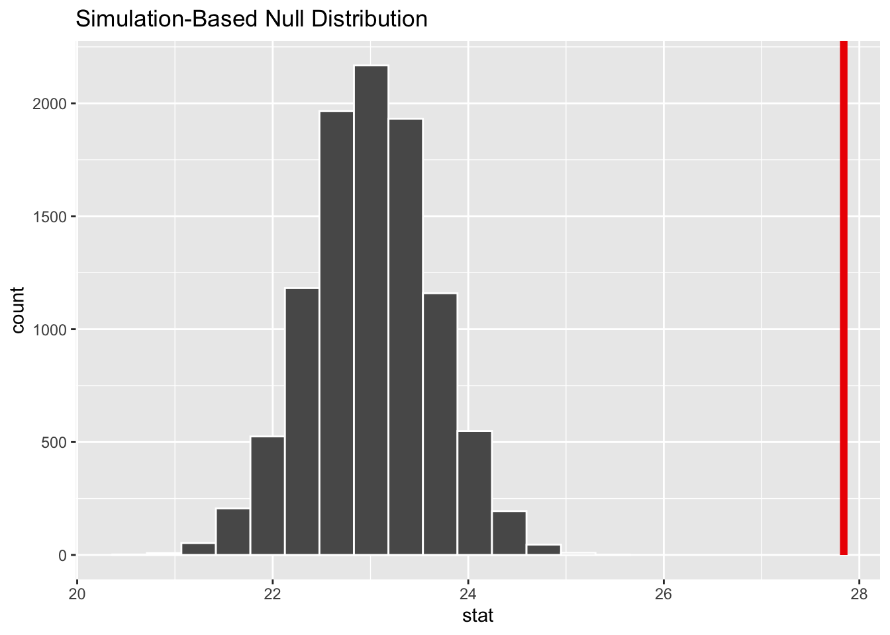
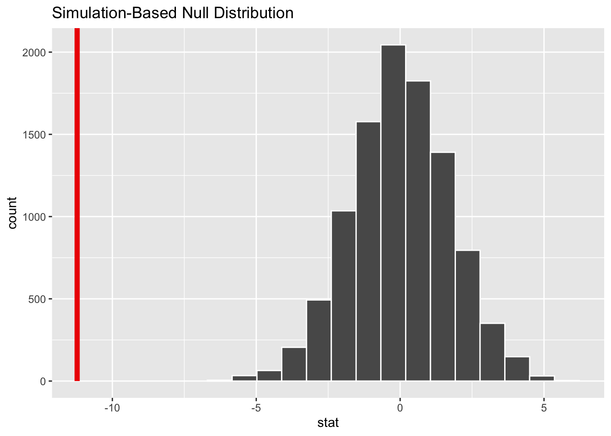
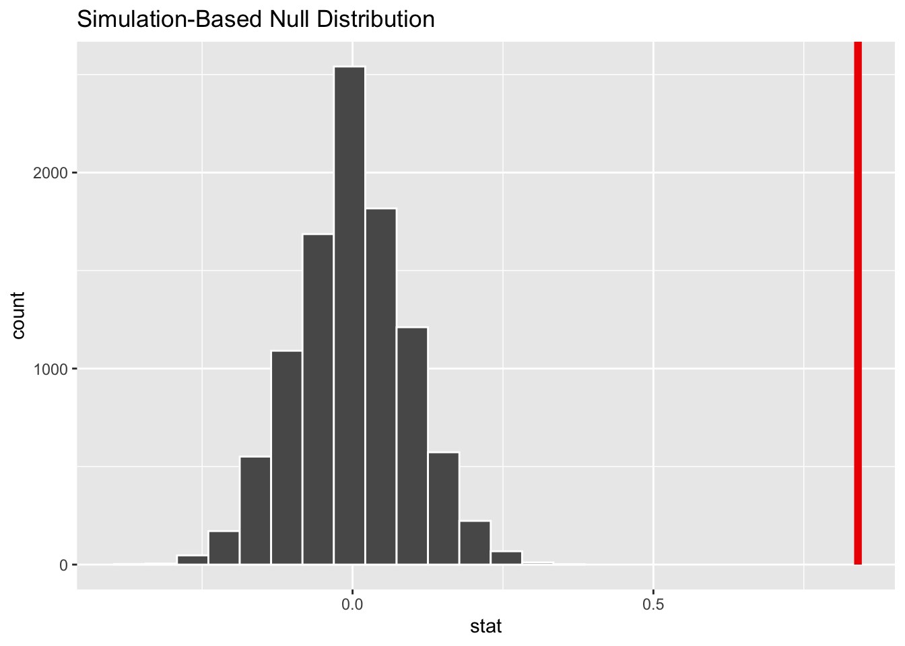
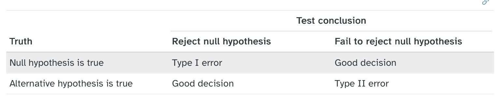

Check if we have enough evidence to reject the null hypothesis
Lets take an example: Example 1
According to a national report, 50% of rural respondents believe that climate change is caused by humans. You want to assess whether the proportion of rural respondents in your sample differs from the national average.
What is our testable hypothesis
Null Hypothesis
The proportion of rural respondents who believe in human-induced climate change is 0.5
Hypothesis testing for one proportion
Alternate Hypothesis
The proportion of rural respondents who believe in human-induced climate change is not equal to 0.5
1-sample proportions test without continuity correction
data: table(dat_1prop$climhuman), null probability 0.5
X-squared = 1.6, df = 1, p-value = 0.2059
alternative hypothesis: true p is not equal to 0.5
95 percent confidence interval:
0.4459589 0.7365167
sample estimates:
p
0.6
Conclusion
Do we reject the null hypothesis?
No.
We are not very confident that our results are NOT due to sampling variability
A General Workflow
Your turn: Lab 6
Does place matter?
Are urban residents more likely to believe that climate change is caused by humans, as compared to rural residents?
What is our testable hypothesis
Null Hypothesis
The proportion of urban respondents who believe in human-induced climate change is the same as the proportion of rural residents
Hypothesis testing for 2 proportions
Alternate Hypothesis
The proportion of urban respondents who believe in human-induced climate change is the greater than the proportion of rural residents
one-sided hypothesis test
Descriptive Analysis
ggplot(dat_2prop, aes(x = area_type, fill = climhuman)) +geom_bar(position ="fill") +labs(x ="Area Type", y ="Proportion (Climate change caused by humans)") +coord_flip()
prop.test(x =c(45, 24), n =c(60, 40),alternative ="greater")
2-sample test for equality of proportions with continuity correction
data: c(45, 24) out of c(60, 40)
X-squared = 1.872, df = 1, p-value = 0.08562
alternative hypothesis: greater
95 percent confidence interval:
-0.02795776 1.00000000
sample estimates:
prop 1 prop 2
0.75 0.60
Conclusion
Example 3
According to the same national report, the average age of respondents who believe that climate change is caused by humans is 24 years. You feel that older people in your study area are more aware too and hence think that your area may have a comparatively older population that believes in human-induced climate change.
What is our testable hypothesis
Null Hypothesis
The mean age of those who believe in human-induced climate change is the same as national average (23)
Hypothesis testing for one mean
Alternate Hypothesis
The mean age of those who believe in human-induced climate change is > 23
one-sided hypothesis test
Descriptive Analysis
# Lets look at distribution of those say yesdat_1mean <- dat_1mean |>filter(climhuman =="yes")ggplot(data = dat_1mean, mapping =aes(x = age)) +geom_histogram(binwidth =3, color ="white")

Calculate the Sample mean
One continuous variable
summary(dat_1mean$age)
Min. 1st Qu. Median Mean 3rd Qu. Max.
19.00 24.00 27.00 27.84 31.00 40.00
null_distn_one_mean |>visualize() +shade_p_value(obs_stat = x_bar, direction ="greater")

pvalue <- null_distn_one_mean |>get_pvalue(obs_stat = x_bar, direction ="greater")
Warning: Please be cautious in reporting a p-value of 0. This result is an approximation
based on the number of `reps` chosen in the `generate()` step.
ℹ See `get_p_value()` (`?infer::get_p_value()`) for more information.
null_distn_two_means |>visualize() +shade_p_value(obs_stat = d_hat, direction ="less")

pvalue <- null_distn_two_means |>get_pvalue(obs_stat = d_hat, direction ="less")
Warning: Please be cautious in reporting a p-value of 0. This result is an approximation
based on the number of `reps` chosen in the `generate()` step.
ℹ See `get_p_value()` (`?infer::get_p_value()`) for more information.
pvalue
# A tibble: 1 × 1
p_value
<dbl>
1 0
Calculate Confidence Interval
boot_distn_two_means <- dat_2means |>specify(age ~ climhuman) |>generate(reps =10000) |>calculate(stat ="diff in means", order =c("yes", "no"))
t.test(age ~ climhuman, data = dat_2means, var.equal =FALSE,alternative ="less")
Welch Two Sample t-test
data: age by climhuman
t = -7.6401, df = 44.349, p-value = 6.342e-10
alternative hypothesis: true difference in means between group yes and group no is less than 0
95 percent confidence interval:
-Inf -8.755957
sample estimates:
mean in group yes mean in group no
27.84058 39.06452
Conclusion
Example 5
Does Climate change education matter?
Suppose the same people in your study were surveyed before and after an educational campaign about climate change.
They were assigned “climate concern score” (from 1–10) before and after the campaign
Are residents more concerned about human-induced climate change after a climate change educational campaign?
What is our testable hypothesis
Null Hypothesis
The campaign had no impact
Mean score is same before and after the compaign
Hypothesis testing for 2 means (paired samples)
Alternate Hypothesis
The campaign had a positive impact
Mean score is higher after the campaign as compared to before
null_distn_paired_means |>visualize() +shade_p_value(obs_stat = d_hat, direction ="greater")

pvalue <- null_distn_paired_means|>get_pvalue(obs_stat = d_hat, direction ="greater")
Warning: Please be cautious in reporting a p-value of 0. This result is an approximation
based on the number of `reps` chosen in the `generate()` step.
ℹ See `get_p_value()` (`?infer::get_p_value()`) for more information.
# A tibble: 1 × 7
statistic t_df p_value alternative estimate lower_ci upper_ci
<dbl> <dbl> <dbl> <chr> <dbl> <dbl> <dbl>
1 8.94 99 1.00 less 0.84 -Inf 0.996
Conclusion
Did the campaign work or not?
Class Exercise
Think about a potential question that you are interested in
What could be one hypothesis related to your question that you could test?
Conceptually
Mathematically in terms of sample statistics (eg. mean or proportion)
What would be the null hypothesis that you would want to reject?
Conceptually
Mathematically in terms of sample statistics (eg. mean or proportion)
Errors in Hypothesis Testing
Hypothesis tests are not flawless
Think about wrongful convictions
We can quantify and control the rate of error
Hypothesis Test Scenarios

Hypothesis Test Scenarios
Null Hypothesis (H0): Defendant is innocent
Alternate Hypothesis (HA): Defendant is guilty
What would type 1 error represent
What would type 2 error represent
Connections between type 1 and type 2
Adjusting for errors
Adjusting level of discernibility (instead of significance)
Reflects the real-world consequences for your error
Adjusting Sample Size
Large sample sizes <- smaller p value
large sample sizes
Example: Food Safety Tests
A food safety inspector is called upon to investigate a restaurant with a few customer reports of poor sanitation practices. The food safety inspector uses a hypothesis testing framework to evaluate whether regulations are not being met. If he decides the restaurant is in gross violation, its license to serve food will be revoked.
Answer the following question
As a diner, would you prefer that the food safety inspector requires strong evidence or very strong evidence of health concerns before revoking a restaurant’s license?
Example - Flu vaccine study
H0: Old Flu Vaccine and New Flu Vaccine are the same
HA: New Vaccine is superior to Old Flu Vaccine
What would type 1 error be?
What would type 2 error be?
Which would be more of an issue?
Other assumptions about hypothesis testing
Randomness
Often not the case in the real world
need to control for other factors
Independence
Each sample is independent of the other
Knowing something about one observation does not tell us anything about the other